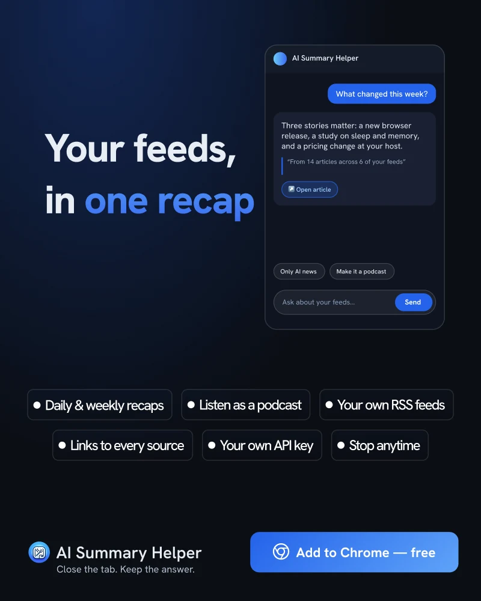

插图由 AI 生成
指南 · 2026 年 10 月
以一份精选简报取代 40 个订阅源
40 个订阅源意味着午休前会有 40 次细微的干扰。而一份简报将它们收拢为一次读完的高效体验。
2009 年，Sophie Leroy 提出了“注意力残留”（Attention Residue）理论：当你从一项任务切换到另一项时，部分注意力仍会停留在上一项任务中。她的实验表明，被打断的人在处理下一项任务时表现更差，且在时间紧迫时这种负面效应更为显著。
Transcript · 0:18
- 会做摘要的 RSS 阅读器。
- 订阅你喜欢的来源。
- 点一下，就能得到整天内容的简报。
RSS 阅读器本质上是一台任务切换机器。每一条资讯都是不同的话题、不同的语调和不同的标签页。即使每条内容扫一眼只需几秒，累积的注意力残留依然巨大。当你回到主线工作时，大脑的一部分可能还在琢磨某家云服务商的价格变动。
为什么订阅源的“收件箱清零”（Inbox Zero）注定会失败
未读计数把阅读变成了沉重的负担。优质订阅源之所以优秀，恰恰在于它们高频更新，但这也意味着未读数字只会不断增加。面对庞大的积压，人们往往只能“宣布信息破产”、一键全标为已读，然后不久又重蹈覆辙。
一份聚合简报能带来什么改变
AI Summary Helper 的 Feeds 标签页允许您添加真正关注的 RSS 订阅源。它不再呈现冗长的条目列表，而是为您生成一份简报：每日或每周汇总所有更新，并附带原文链接。您只需抽出专门的时间一并阅读，无需整天被上午 10:42 突发的网络资讯打乱节奏。
您还可以将其作为播客收听——这在抽不出时间阅读时格外实用。与单篇摘要一样，简报生成同样基于您自行配置 API key 或本地模型的 AI 服务商运行。

如何设置以发挥最大价值
- 第一步：精简订阅列表。 只保留那些真正有价值的订阅源。输入质量越高，生成的简报就越精准。
- 固定每天的阅读时间。 在固定时间阅读简报，能打破频繁刷新的习惯。如果每小时都去刷简报，那它无非是一个更慢的信息流。
- 点击深入感兴趣的内容。 简报中的每项内容都指向原文，因此摘要是深入阅读的入口，而非替代品。
目的不是偷懒少读，而是通过一次深思熟虑的主动筛选，来决定关注什么，而不是被动地被打断 40 次。
AI Summary Helper 是一款免费的 Chrome 扩展程序。
添加至 Chrome